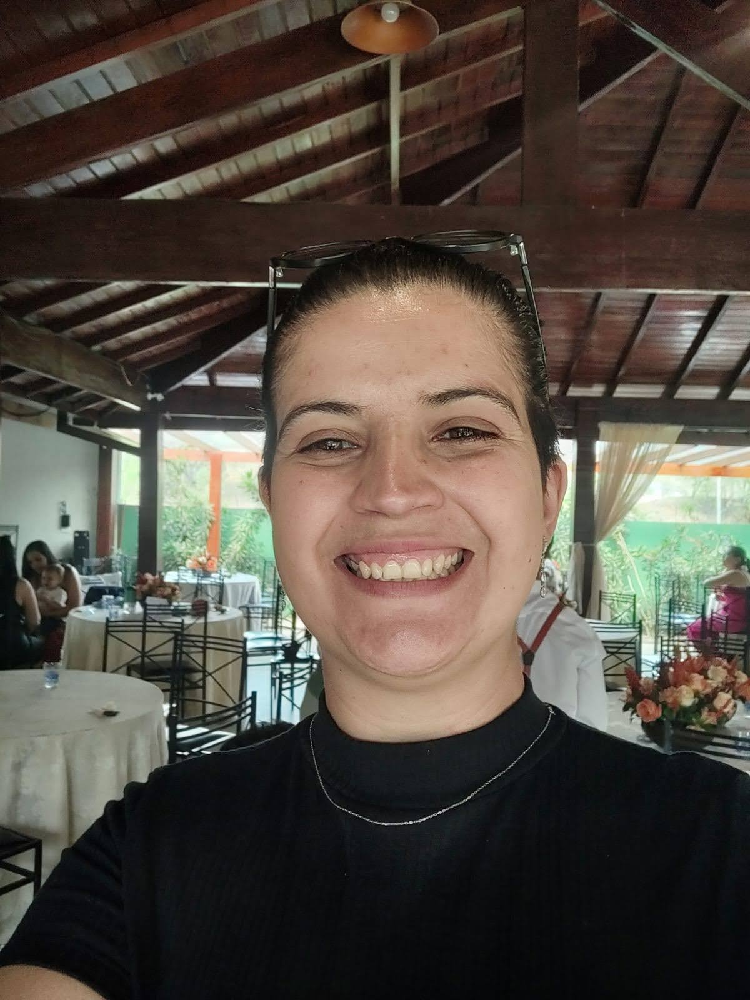

Sobre mim
Estou em transição para a área de tecnologia, com foco em desenvolvimento web e na construção de uma base sólida em programação.
Tenho direcionado meus estudos para , CSS, JavaScript, Python e Git/GitHub, buscando aprender não só a parte visual das aplicações, mas também a lógica e a organização por trás de tudo.
No dia a dia, venho conciliando minha formação superior com estudos e projetos práticos, colocando em prática o que aprendo e construindo meu portfólio aos poucos.
Essa mudança de área tem sido desafiadora, mas também muito motivadora. Aos poucos, estou ganhando mais confiança, entendendo melhor os conceitos e evoluindo a cada projeto.
Meu objetivo é conquistar uma oportunidade na área de tecnologia, em um ambiente onde eu possa continuar aprendendo, me desenvolvendo e crescer profissionalmente.
Acredito que minha trajetória tem fortalecido habilidades como organização, adaptabilidade e comprometimento — que levo comigo nessa nova fase.
Esse site faz parte dessa jornada — simples, em construção, mas cheio de significado.


